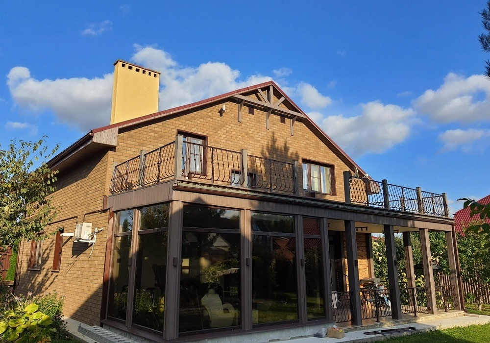

Кровля&фасад · ТулаДом, кровля и фасад.
Дом, кровля и фасад.
В одних руках.
Строим дома, выполняем кровельные и фасадные работы в Туле. Обсудим весь объект или отдельный этап.
Обсудить строительство
ПРИМЕРЫ РЕШЕНИЙОт стен.
От стен.
До готового фасада.
Кирпичные, газоблочные и каркасные дома. Посмотрите фотографии объектов и обсудите состав работ: строительство, устройство кровли или отделку фасада.
Обсудить работы